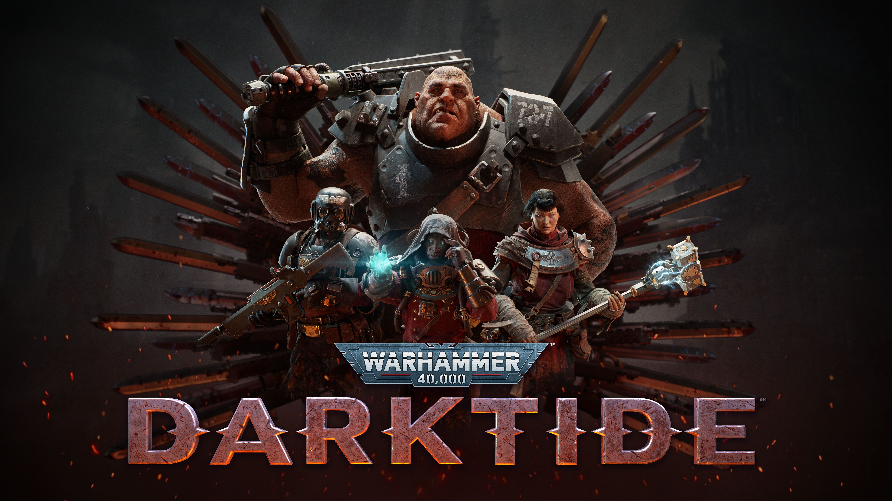
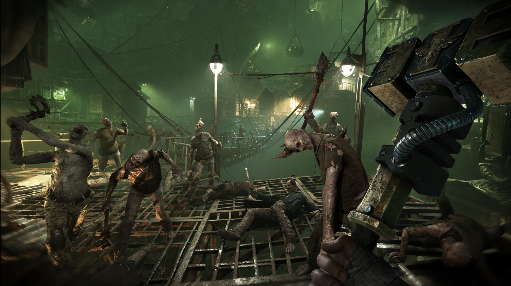
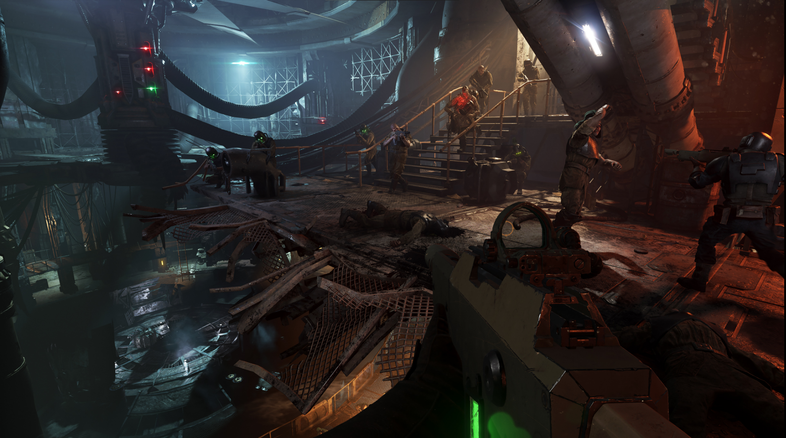

GAMEPLAY
Uma partida de Warhammer 40K: Darktide começa com você e seu time entrando em um ambiente hostil, prontos para enfrentar hordas de inimigos do Caos. A atmosfera é tensa, com ruínas industriais, corredores estreitos e espaços abertos cheios de perigos. Logo nos primeiros momentos, o combate começa, e a ação se intensifica rapidamente. O ritmo é frenético, com você alternando entre tiroteios à distância e combate corpo a corpo. À medida que os inimigos se aproximam, a coordenação com seu time se torna essencial. Cada jogador escolhe uma classe que contribui de forma única: alguns se especializam em eliminar alvos de longe, enquanto outros são mais eficazes no combate de curta distância ou oferecem suporte ao grupo. O uso de habilidades especiais e armas poderosas pode virar o jogo a favor da equipe em momentos críticos.

